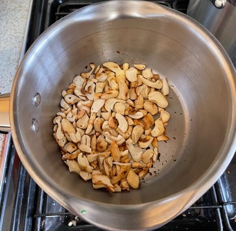

Vegetable tagine
- Heat until soft in big pot
- 2 large onions
- 2 tbsp olive oil
- Add and cook for 2 mins
- 4 cloves of garlic
- 1 cinnamon stick
- 1½ tsp ground ginger
- 1 tsp turmeric
- ¼ tsp saffron threads
- Add and simmer on low heat for 25 mins
- 600g sweet potatoes cut into large cubes
- 400g corgettes / aubergine / squash / cauliflower / mushrooms
- 500ml vegetable stock
- 250g apricots & raisins halved
- skin of 1 preserved lemon finely chopped
- Add 1 tin chick peas and cook for 10 mins
- Add
- 50g green olives halved
- 75g roasted cashew nuts chopped
- 1 tbsp harissa
- small bunch coriander or parsely
- Hazelnuts or cashews
- Serve with couscous

- Added harissa
- Increased nuts from 50g
- Replaced turnips
- Too sweet, removed honey and replaced prunes, reduced fruit from 300g to 250g